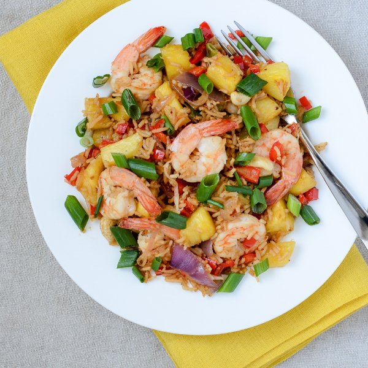

Thai Pineapple Fried Rice with Shrimp

Total Time
40 min
Nutrition (per serving)
590.3 kcalCalories
33.2 gProtein
69.6 gCarbs
20.9 gFat
Full nutrition table
| Calories | 590.3 kcal |
| Total fat | 20.9 g |
| Saturated fat | 11.1 g |
| Trans fat | 0 g |
| Cholesterol | 214.3 mg |
| Sodium | 978.8 mg |
| Carbohydrates | 69.6 g |
| Fiber | 5.3 g |
| Sugars | 17 g |
| Protein | 33.2 g |
| Potassium | 820.8 mg |
| Calcium | 171.8 mg |
| Iron | 4.8 mg |
| Vitamin A | 626.3 IU |
| Vitamin C | 139.1 mg |
| Vitamin D | 3.4 IU |
Cookware
Ingredients
- 1 cupbasmati rice
- ½ cupcashews, roasted unsalted
- 4 clovesgarlic
- 1 small bunchgreen onions (scallions)
- 1 smallpineapple
- 1 ½ lbraw peeled shrimp, fresh or frozen
- 2red bell peppers
- 1 mediumred onion
- crushed red pepper
- fish sauce
- salt
- soy sauce
- virgin coconut oil
Steps
- Rinse rice in a stainer until water runs clear and transfer to a small saucepan. Add water and salt. Bring to a boil. Reduce heat to low, stir, and cover. Cook until liquid is absorbed, 15-18 minutes. Remove from heat and uncover to cool.2 cups water
1 cup basmati rice
½ tsp salt - If using frozen shrimp, place in a medium bowl, cover with cold water, and set aside to thaw. If using fresh shrimp, skip this step.1 ½ lb raw peeled shrimp, fresh or frozen
- Wash and dry bell peppers and green onions. Seed and small dice peppers. Trim and discard root ends and slice green onions diagonally into small pieces. Peel and thinly slice onion into half rings. Peel and mince garlic.2 red bell peppers
1 small bunch green onions (scallions)
1 medium red onion
4 cloves garlic - Cut skin off pineapple, core, and cut into bite-sized pieces.1 small pineapple
- Heat a skillet over medium-high heat.
- Drain shrimp and rinse under cold water until there are no more ice chunks. Place on paper towels and pat dry.
- Coat bottom of skillet with oil. Add shrimp and cook until pink, 2-3 minutes. Transfer to a plate.2 tbsp virgin coconut oil
- Return skillet to stove and add more oil. Add bell pepper and red onion and, stirring frequently, cook until softened, 2-3 minutes.1 tbsp virgin coconut oil
- Toss rice into a colander to drain off any excess water.
- Add garlic, ¾ of the green onions (save the rest for garnishing), and red pepper to skillet. Stir and cook until fragrant, 15-30 seconds.¼ tsp crushed red pepper
- Stir in rice and fish sauce. Cook until heated through and well combined, 1-2 minutes.2 tbsp fish sauce
- Stir in shrimp and any juices, pineapple, cashews, and soy sauce.½ cup cashews, roasted unsalted
4 tbsp soy sauce - To serve, place rice on a plate or in a bowl and garnish with remaining green onions. Enjoy!